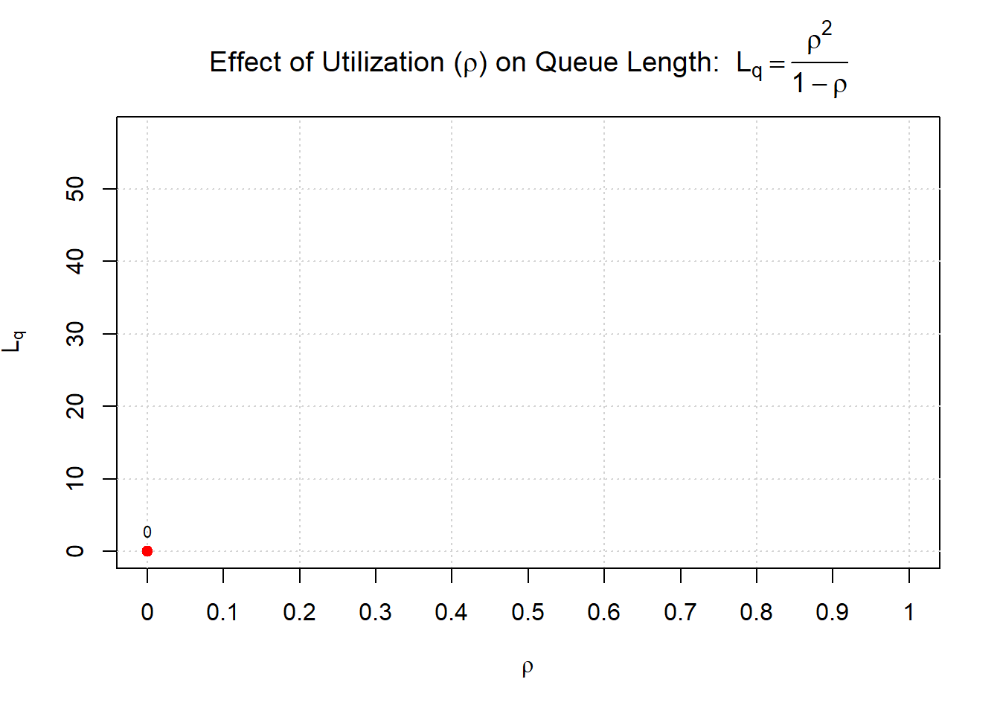
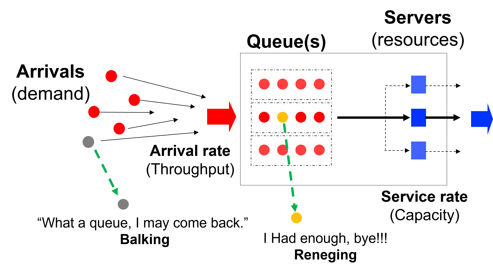
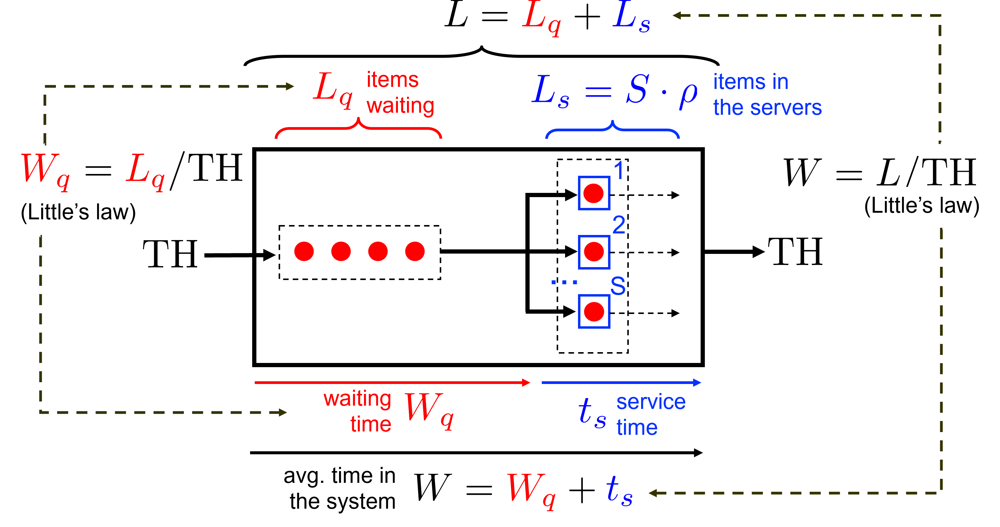
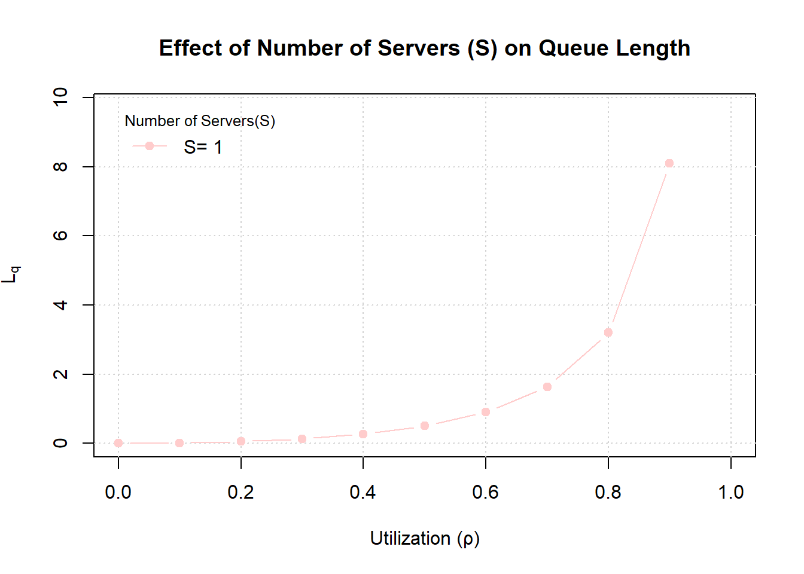
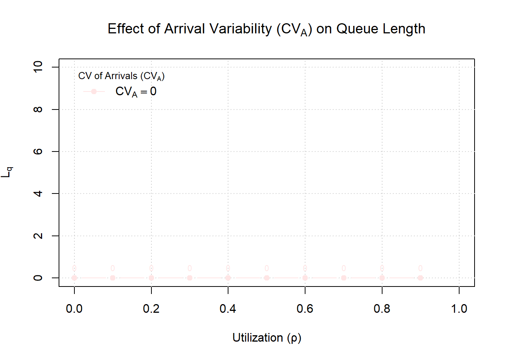

Technical Note on Queueing Systems
Waiting Times due to Random Variability
This technical note complements the accompanying video (Module 3: Flow and Queue Management) by offering a rigorous yet accessible foundation in the principles of queuing systems. It explains how queues arise, how their performance can be quantified, and what practical levers managers can use to design better queuing experiences. While the video builds intuition, this note delivers the mathematical backbone—clear, targeted, and directly applicable to real-world operational decisions.
Introduction: From Lines to Strategic Levers
Whether you’re managing a luxury hotel, a call center, or an e-commerce platform, one operational challenge consistently influences customer satisfaction and profitability: the queue. Queues are where operations meet customer experience. They determine perceptions of efficiency, fairness, and value—and can break or boost loyalty.
As future managers and decision-makers, MBA students must learn to go beyond intuition and back-of-the-envelope guesses. Queue management is not just about reducing wait times—it’s about managing variability, optimizing resource allocation, and aligning service delivery with customer expectations. A short line may reflect good planning—or overstaffing. A long line may signal high demand—or poor design.
The Key Performance indicators of Queueing Systems
Before diving into technical models, it is important to understand the core performance metrics that service managers need to monitor. In any system with waiting lines, managers want to understand how many customers or packages are waiting, how long they wait, how many are being served or processed, and how long the full experience takes from arrival to departure. These are expressed as:
- Average number of customers/packages waiting in line (denoted by \(L_q\)- Length of queue)
- Average time a customer spends waiting before service (denoted by \(W_q\)- Waiting time in queue)
- Average number of customers in facility (denoted by \(L\)- Length of queue plus in service)
- Average total time a customer spends in the system (denoted by \(W\)- Waiting time in queue plus being served)
These KPIs are crucial because they directly influence outcomes relevant to managers, including customer satisfaction, labor utilization, service levels, and operational costs. For instance, in restaurants, seating delays of thirty minutes negatively affect customer reviews compared to immediate seating, subsequently impacting future demand. Similarly, in healthcare settings, prolonged wait times correlate with lower service ratings and decreased patient retention. Managers frequently confront the following operational levers:
Staffing Levels: How many staff members must I allocate to keep the average waiting time within acceptable limits?
Queue Design: Should the queueing system adopt dedicated checkouts (like supermarkets), or a single serpentine queue?
Service Specialization: Should servers be centralized with cross-training, or specialized in specific tasks, and what implications will these choices have on key KPIs?
To rigorously provide good estimates of the KPIs and the managerial levers, we need to understand what influences them.
Anatomy of a Queueing system
Three elements define any queueing system.
Characteristics of Queueing Design System.
The structure of the system, which includes the number of servers, whether lines are pooled or separate, and how customers are selected for service. Most systems follow a first-come, first-served rule, but others may prioritize based on status or need.
Characteristics of Arrivals.
Types of items: While in the service industry we mainly think of customers as those that arrive to the system, in manufacturing or distribution settings the arriving items can be packages or material. Independent of what we are talking about the “items” are characterized by:

- The mean arrival rate (called \(\lambda\) expressed as the number of items arriving per unit of time, i.e. 5 customers/hour or by the average time between arrivals of \(t_A=12\) min/customer.
- The distribution of arrivals often summarized by the variability or standard deviation of interarrival times \(\sigma_A\), i.e. 8 min.
- To understand whether the above mentioned 8 min of standard deviation is a lot or not, one standardizes the standard deviation by its mean, the so called Coefficient of Variation of arrivals \(CV_A=\frac{\sigma}{t_A}=\frac{8}{12}=0.75\). The higher the coefficient of variation the more variable a system is.
Characteristics of Servers.
The number of servers an item has available to them once they finished waiting in the line. For instance, a typical supermarket where customers line up per check out, have typically one server in front of them- while a serpentine queueing system where customers could go to one of the servers has a multi server system.
Like arrivals, servers are characterized by the same three service time characteristics as the arrivals, namely:
an average service time \(t_S\), i.e 3 min preparation time to make a coffee or the capacity of the server \(\mu=\frac{60}{t_s}= 20\) coffee per hour.
the distribution of service times- or as summary statistics the standard deviation \(\sigma_S\) and,
the coefficient of variation of service \(CV_S=\sigma_S/t_S\).
Utilization: In our earlier capacity analysis (without wait times), we tracked how busy a server or resource was on average. In queuing analysis, utilization is a key factor: it is the fraction of time the servers are busy, essentially how much of the system’s capacity is being used by incoming demand. Utilization is defined as:
\[\text{Utilization } (\rho)= \frac{\lambda}{S\times \mu}=\frac{\text{Arrival Rate}}{\text{Number of Servers}\times\text{Service Rate}}\] This is analogous to the utilization formula in basic capacity analysis. In words: if you have \(S\) servers each capable of serving \(\mu\) customers per unit time (so total service capacity is \(S \times \mu\) per unit time), and customers arrive at rate \(\lambda\), then \(\rho\) is the fraction of service capacity being utilized by arrivals.
If \(\rho < 1\), the system can handle the incoming load on average (capacity exceeds demand on average). There will be some waiting, but the system will eventually catch up with arrivals.
If \(\rho = 1\), the system is operating at full capacity on average. Even a slight random fluctuation can cause the queue to build indefinitely (since there’s no slack).
If \(\rho > 1\), the arrival rate exceeds service capacity and the queue will explode without bound (the system is fundamentally under-capacity).
Managers should aim to keep $\rho$ well below 1 (typically in the 70–90% range depending on context) to provide a buffer for variability and avoid runaway queues.
How the KPIs are related (Little’s Law)
Once customers enter a system, how long they stay and how many are present are not independent. Little’s Law provides a simple yet powerful relationship between throughput, flow time, and inventory in any steady-state process. Recall from basic operations that we had:
\(WIP=TH\times TT\) (Work in Progress= Throughput rate x Throughput time)

In queueing systems \(WIP\) the number of items that are in the system is denoted by \(L\) the length of the system, or the number of items in the system.
The throughput rate, in queueing systems is the arrival rate (\(\lambda\))- since the arrival rate will be smaller than the service rate (to ensure that utilization \(\rho<1\)).
The throughput time is the time the item or customer is waiting W.
Thus Little’s Law with the queuing terminology can be rewritten as:
\(L=\lambda \times W\) (Length in System= Arrival rate x Total waiting time)
Or when only considering the queueing system:
\(L_q=\lambda \times W_q\) (Length in Queue= Arrival rate x Waiting time in queue)
Additionally, and very intuitively we know that the time an item or customer spends in the system is the time they waited plus the time they were in service. Mathematically, this can be expressed as:
\(W=w_q+t_S\)
Now lets mark what we know from the characterization of a queueing system:
\[ L=\textcolor{green}{\lambda} \times W \quad L_q=\textcolor{green}{\lambda} \times W \quad W= W_q + \textcolor{green}{t_S} \quad \]
Clearly, if we would know one more parameter lets say \(L_q\), then we could find \(W_q\).
But since we know \(W_q\) we also know \(W\), and if we know \(W\) we can find \(L\).
Thus in summary, the knowledge of one parameter is sufficient to get all the KPI’s a manager tend to be interested in.
This parameter though must clearly depend on the characteristics of the queueing system (arrivals, service, and design characteristics). The formula is an approximation but serves reasonably well to assess performance of queueing systems.
To estimate \(L_q\) directly, we use the Sakasegawa approximation:
\[ L_q = \frac{\rho^{\sqrt{2 \times (S+1)}}}{1 - \rho} \cdot \frac{CV_A^2 + CV_S^2}{2} \]
Although not pretty at first and for some even scary, this formula serves as a fast approximation to estimate queue length, without restoring to simulation. It’s particularly useful in high-level planning where quick trade-off assessments are needed.
Now that we’ve discussed how to derive and interpret key performance indicators (KPIs) and apply the relevant queueing formula, let’s deepen our understanding by examining its individual components.
The formula for the length in the queue (\(L_q\)) depends on three crucial characteristics:
- Utilization (\(\rho\)),
- Number of servers (\(S\)) available for customers,
- Coefficient of variation of arrivals and service times (\(CV_A\)), (\(CV_S\)).
We’ll now systematically explore how each of these factors independently influences the length of the queue.
1. Length in the Queue (\(L_q\)) as a function of Utilization (\(\rho\))
To simplify our analysis and clearly isolate the effect of utilization, we temporarily set both the number of servers and coefficients of variation to 1 (\(S = CV_A = CV_S = 1\)). Our formula for the queue length reduces neatly to:
\[ L_q = \frac{\rho^{\sqrt{2 \times (S+1)}}}{1 - \rho} \cdot \frac{CV_A^2 + CV_S^2}{2} = \frac{\rho^2}{1 - \rho}. \]
Below, we illustrate how the queue length \(L_q\) grows as utilization \(\rho\) increases. We compute \(L_q\) for utilization levels from 0 up to 0.98 (98%). Notice that as \(\rho\) approaches 1 (100% utilization), the denominator \((1-\rho)\) becomes very small, causing \(L_q\) to blow up:
As the graph above shows, queue length shoots up dramatically as utilization nears 100%. At moderate utilization (say \(\rho = 0.5\) or \(50\%\) busy), the average queue is quite small. But as you go past
\(80\%\) or \(90\%\), \(L_q\) grows rapidly. For example, increasing \(\rho\) from \(90\%\) to \(95\%\) might double or triple the queue length. This has a clear managerial implication: operating too close to full capacity is risky. A system running at more than \(95\%\) utilization might look efficient on paper (minimal idle time), but it will likely generate long lines and waiting times that anger customers. Managers should consider either adding capacity or controlling arrivals (through appointments, incentives to avoid peak times, etc.) to keep utilization in a safer range. A rule of thumb is to allow some “slack” in the system if customer wait time is a concern.
2. Length in the Queue (\(L_q\)) as a function of Number of Servers (S):**
Next, let’s examine how the queue length changes as we vary the number of servers (\(S\)). To clearly illustrate this effect, we’ll set the coefficients of variation (\(CV_A\)) and (\(CV_S\)) both equal to 1, and explore how (\(L_q\)) behaves as we increase (\(S\)) for a fixed level of utilization (\(\rho\)).
The simplified formula in this scenario becomes:
\[ L_q = \frac{\rho^{\sqrt{2 \times (S+1)}}}{1 - \rho} \cdot \frac{CV_A^2 + CV_S^2}{2} = \frac{\rho^{\sqrt{2\times(S+1)}}}{1-\rho} \]
Below, we show how the queue length (\(L_q\)) decreases as we increment the number of servers (\(S\)) from 1 up to 10, highlighting how additional servers reduce congestion and improve customer experience.

3. Length in the Queue (\(L_q\)) as a function of Coefficient of Variations (\(CV\)):**
Finally, let’s examine how the queue length changes as we vary the coefficient of variations (\(CV\)). To do this let us focus on the coefficent of variations for arrivals \(CV_A\) and for illustrative purposes let the coefficient of variations of service be \(CV_S=0\). Furthermore, as before we let the number of servers be \(S=1\). In this case the approximation formula simplifies to:
\[ L_q = \frac{\rho^{\sqrt{2 \times (S+1)}}}{1 - \rho} \cdot \frac{CV_A^2 + CV_S^2}{2} = \frac{\rho^{2}}{1-\rho}\cdot\frac{CV_A^2}{2} \]

The chart illustrates that lower variability leads to shorter queues for the same average utilization. In the extreme case (\(CV_A = 0\), the dark red line), arrivals are perfectly steady (e.g., exactly one customer every fixed interval). Here, you see that \(L_q\) remains very low up until extremely high utilizations because the system is not experiencing any random surges – customers arrive like clockwork and are processed in an orderly fashion. On the other hand, the top line (\(CV_A = 1.0\), light red/pink) shows much higher queues at moderate utilizations because arrivals can bunch up randomly (for example, you might get 5 customers arriving almost at once, then a gap, etc., causing a backlog).
Managerial insight: Reducing variability is a powerful lever for improving queue performance. While variability is sometimes outside your direct control (e.g., random customer walk-ins), there are ways to manage it:
Arrival variability: Can be mitigated by smoothing demand. For instance, use appointment systems, require reservations, offer incentives for customers to come at off-peak times, or use queue management tools that meter entry (e.g., allowing a certain number of people into a system per minute).
Service time variability: Can be reduced by standardizing procedures, training staff to a consistent performance level, or segmenting customers by service requirements (so that simple tasks are handled in one line, complex tasks in another, ensuring that a single slow transaction doesn’t hold up everyone behind them).
Buffering variability: Even if you can’t reduce inherent variability, you can buffer against it – for example, having a pool of servers/agents that can be activated when there’s a sudden surge (on-call staff or multi-skilled employees who can jump in).
Reducing variability has a similar effect to increasing capacity: it cuts down wait times. In some cases, it might even be more cost-effective – e.g., smoothing out an appointment schedule costs nothing but can eliminate the need to hire an additional full-time staff member just to handle unpredictable peaks.
Managerial Levers: Designing a Better Queue
In summary, managers have three major levers to improve queue performance and customer experience:
Add Capacity (Increase Servers or Service Rate): If wait times are too high, one solution is to increase the service capacity. This could mean adding more servers (staff, checkout lanes, call center agents, etc.) or improving service rates (training staff to work faster, introducing self-service kiosks to handle simpler tasks, etc.). The impact of this lever is directly seen in utilization \(\rho\): more capacity means lower \(\rho\) for the same arrival rate, which prevents the explosive growth of queues as shown earlier. Trade-off: Additional capacity incurs higher costs (labor, equipment). A manager must balance the cost of extra capacity against the benefit of shorter queues (and the improved customer satisfaction or higher throughput that results).
Reduce Variability (Stabilize Arrivals/Service): As we saw, high variability in demand or service times amplifies queues. Managers can implement strategies to smooth demand (reservations, appointments, dynamic pricing to shift demand, etc.) and streamline service (standard operating procedures, training for consistency, or even small process improvements like having paperwork filled in advance). Reducing variability (lower \(CV_A\) and \(CV_S\)) makes the system more predictable and queue lengths more manageable. Trade-off: It may require operational changes or enforce restrictions on customers (which need to be managed carefully to avoid inconvenience). For example, requiring appointments can level demand but might deter spontaneous customers.
Pooling and Flexibility: Pooling means combining queues or resources so that variability is shared. Instead of two separate queues for two servers (where one server might be idle while the other has a line), a single pooled queue ensures both servers are almost always busy when there is demand, and customers are served in order. Pooling greatly reduces the probability that one server is starving while another is overwhelmed. Similarly, cross-training staff (flexibility) means employees can shift to where the need is highest, effectively creating a pooled resource. Pooling reduces the impact of variability because fluctuations even out across a larger system. For managers, this could mean using a common queue for all checkouts, having a universal call center instead of dedicated lines for each region, or deploying “floaters” who can assist wherever a line starts forming. Trade-off: Pooled systems can sometimes feel less personal, and cross-training staff requires broader skills (and possibly higher wages). Also, customers might perceive a single long queue as worse than multiple shorter ones, even if the wait time is the same, so communication and expectation management are key.
Finally, it’s worth remembering that queues are symptoms of deeper issues in operations design. A smart manager doesn’t just fight fires by yelling at employees to work faster when lines get long; instead, they redesign the system. This technical note introduced key concepts and formulas to quantitatively analyze queues. Using these insights, managers can move from reactive to proactive management. By anticipating how utilization and variability interact to create waits, and by leveraging capacity and pooling strategically, you can design service systems that keep waits within acceptable limits. The result: happier customers, more efficient operations, and a healthier bottom line.